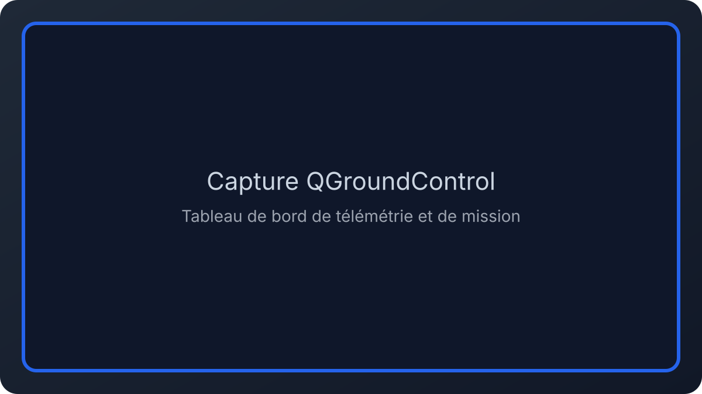

Skydrone Robotics — Dashboard de contrôle
Refonte de l'interface de télémétrie pour une plateforme de contrôle de drones. Le travail s'est concentré sur la clarté visuelle, la hiérarchisation des données et la réduction de la charge cognitive en situation opérationnelle.
Ce que j’ai réalisé
- Organisation du panneau principal pour afficher l’état du drone en un coup d’œil.
- Conception d’indicateurs visuels pour la vitesse, l’altitude et les alertes.
- Création d’une architecture d’information permettant de prioriser l’essentiel.
- Prototype testable pour valider la lisibilité en contexte d’usage.
Capture d'écran

Accès au site
Découvre le site de Skydrone Robotics pour mieux comprendre le positionnement commercial et les solutions proposées.
Visiter skydrone-robotics.comRésultats
La refonte vise à réduire le stress des opérateurs et à leur offrir un suivi plus fiable des paramètres de vol, avec une interface plus propre et des hiérarchies visuelles plus nettes.